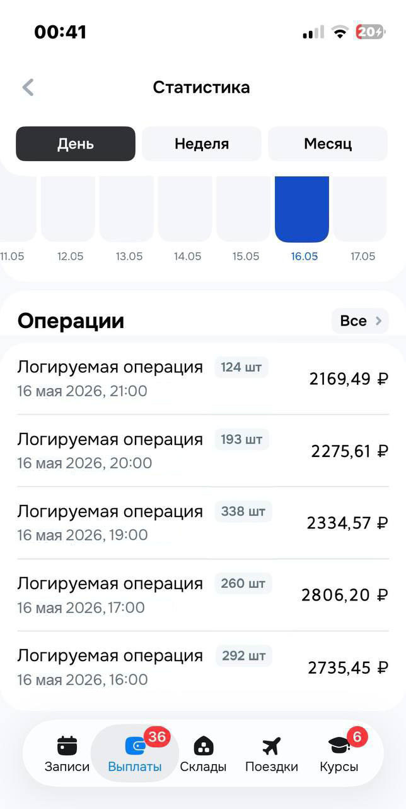
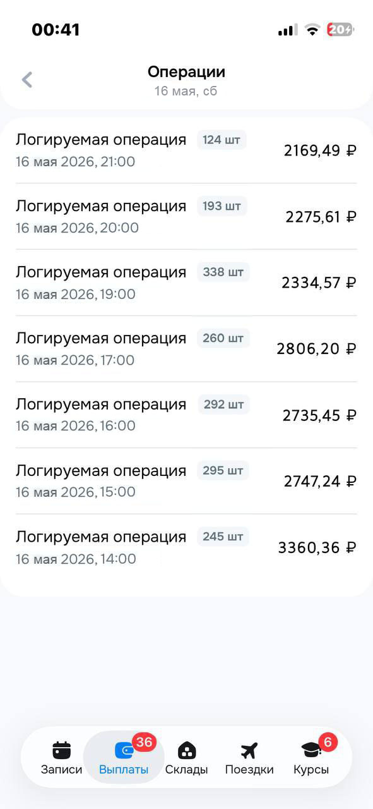
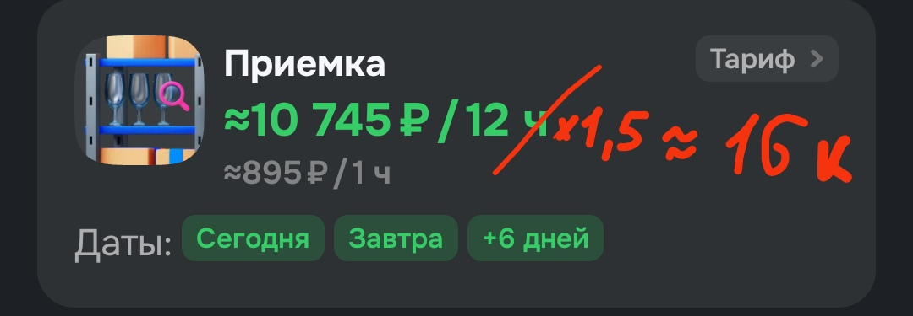
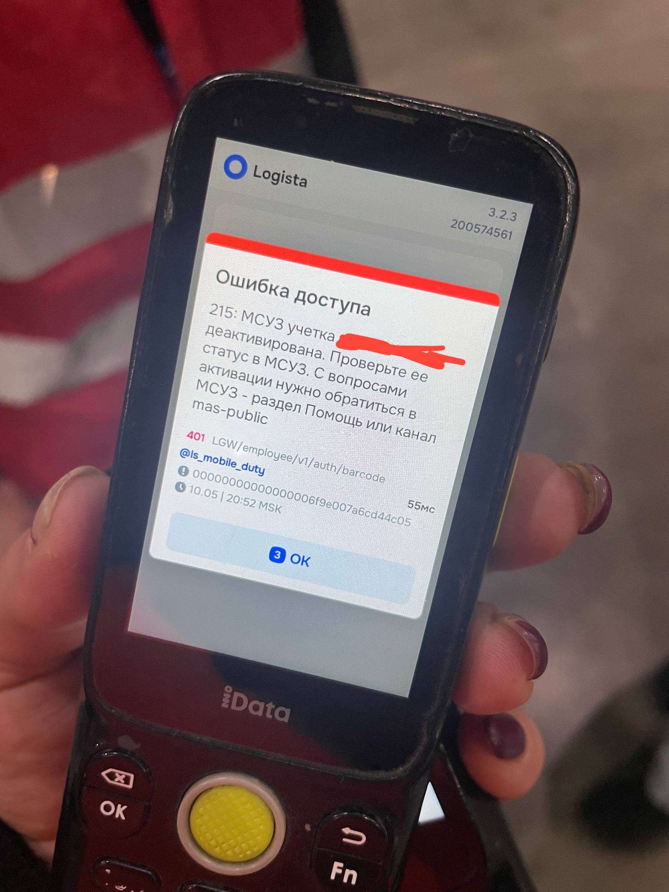

Мы используем уязвимости в системе озон для увеличения заработка.
Эти уязвимости позволяют, например, прогонять один товар через несколько операций, в которых он не нуждается, или увеличивать его объём.
Система думает что всё в порядке и платит больше.
Такие махинации называются фродом.
Способы фрода отличаются в зависимости от типа склада.
Суть махинации в том, что мы изменяем объем товара через системные настройки ТСД.
После этого система платит за те же операции в 4-5 раз больше.
Для того, чтобы изменить объем нужен пароль от админ-панели.
1) Жмёшь 3 точки на ТСД
2) Заходишь в раздел "Системные настройки"
3) Вводишь пароль, потом пикаешь учётку.
4) Когда работаешь пикаешь товар, нажимаешь "информация о товаре". Там будет вкладка "Объём"
т.к. ты вошёл через админку, тсд даст тебе этот объем изменить.5) Если товар маленький ставишь 3-4 литра. Если средний 6-7 л.
У нас на складе свой человек - внутренний сотрудник. он сливает информацию за процент.
Да, такое время от времени происходит. Если изменится - просто напиши мне, я скину новый БЕСПЛАТНО.
Тут схема немного сложнее, зато не нужен пароль.
Вкратце, суть в том, что ты прогоняешь один груз через несколько операций, за каждую из которых ТСД начисляет тебе рубли.
Я скину подробную инструкцию, с помощью каких кодов, операций и в каком порядке это делать правильно
К сожалению для таких типов складов у нас пока нет способов фрода.


Вышестоящие на складе видят только твою выработку за день, они не видят, какие операции ты производишь на своем ТСД.
Самый простой способ "спалиться" - это выносить со смены большие суммы.
1) Заниматься фордом не больше 3-4 часа за смену. до и после - обычная работа.
2) делать выработку не больше чем в 1.5 раза от указанного дохода вашего склада. (например, если ожидаемый доход в приложении - 11.000, не делай больше 16к)

3) Работать с фондом лучше начинать после обеда.
4) Никаким друзьям и знакомым ничего не рассказываем.
Чисто технически вы можете зарабатывать больше, можете использовать схемы когда угодно.
Всё это под вашу личную ответственность, мы не можем и не будем отвечать за ваши ошибки.
Такое происходит редко, особенно если следуешь правилам.
Но если тебя каким то образом вычислят, твою учётную запись залочат. Ты попадешь в черный список озон.
Выглядель это будет примерно так:

это некритично, учетную запись можно разблокировать.
Разблокировка происходит через подачу апелляции в разделе "инструменты начальника смены" с обоснованием ошибки блокировки.Грубо говоря нужно красочно расписать, что тебя заблокировали по ошибке.
Мы занимаемся и этим тоже, но надеюсь тебе не придется обращаться по этому поводу) просто не нарушай правила.
За фрод не предусмотрено уголовное или административное наказание. Тем более штрафы на гос. услугах, как некоторые говорят (пугают)
Как ты уже понял, информация не бесплатная.
Но по сравнению с возможностями, которые даст тебе фрод, это - копейки.
Пароль от админки для крупного склада -- 1800 р.
Мануал для работы на СЦ -- 1100 р.
@managerozonfrod - ТГ, если ссылка не работает
на разных складах пароль разный. Поэтому при покупке пиши название склада на котором работаешь.
Для дополнительного заработка. Всё просто.